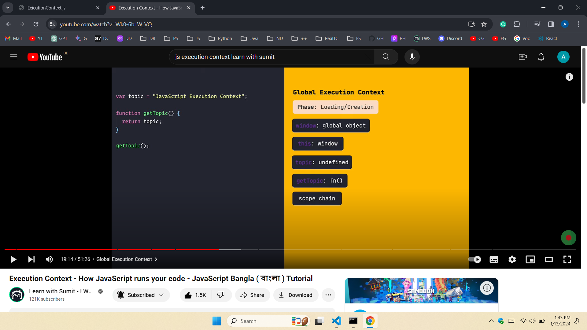

Exploring JS ExicutionContext.js
How JS runs your code
Interpreter: Amader lekha human readable code instruction er protiti
equivalent machine instruction browser engine e lekha ache. Interpreter
line by line exicute kore. Mane protom line interprete kore, tarpor abar
code fire eshe ditio line browser engine e niye zay ebong engine machine
code e convert kore. Interpretation process onek slow chilo, kintu easy to
debug.
Compilation: Compilation e pur file er code eksathe browser engine machine
code e convert kore. Compilation e line by line process chilo na, ejonno
compilation onek fast chilo. Kintu code er moddhye khane error hole
compilation bondo takto na, compilation complete hoye zeto, ejonno kun
line e error hoyeche ta khuje ber kora one kothin chilo. Thik e karonei
Compilation process hard to debug chilo.
JIT-Compiler: JIT: Interprete kore+ Compiler: code ke machine code e
convert kore. Zokhon kuno fuction call hoy tokhon just in time er moddhye
oi function er code machine code e convert hoy ebong run hoy.
Exicution Context:Loading phase
Shurutei zokhon kuno code e thake na, tokhon JS engine 'JS exicution
context' name ekti object create kore. Ei object er moddhye :
window: namok ekti global object thake.
this: diye sei global/window object ke point kora hoy
variable object: code er ze kuno variable er jonno variable object
create hoy
variable object er jonno scope chaining toire hoy
exicution context er creation phase er image:
**loading/creation phase variable assign hoy na
**loading/creation phase e kuno function exicute hoy na, tar reference
allocated hoy

Exicution Context:Exicution phase
exicution context er exicution phase er image:
**exicution phase variable assign hoy
** phase e kuno function takle sei reference onuzaye, function exicution
context toire hoy. Function exicution context er abar duita phase thake.
.png)